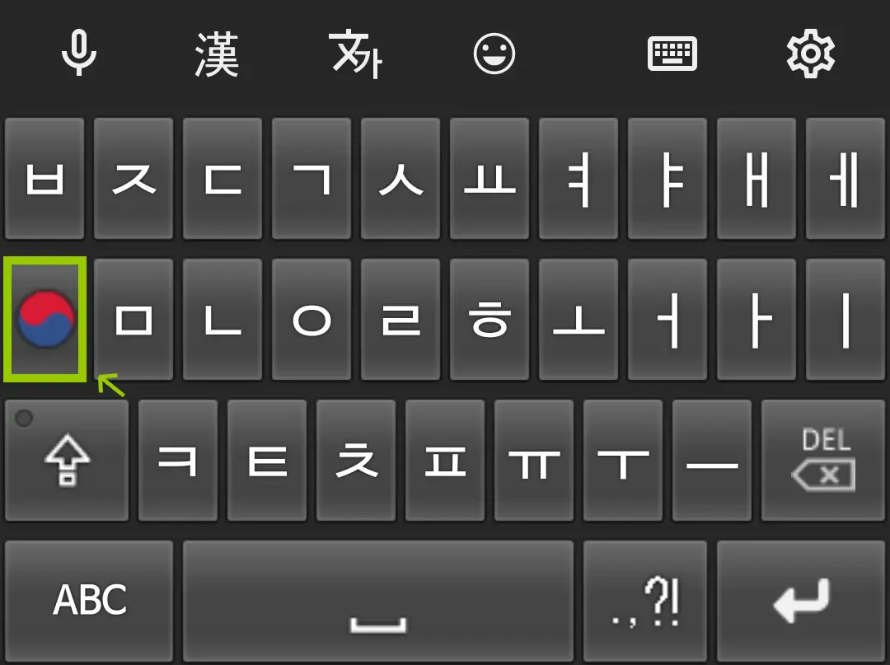
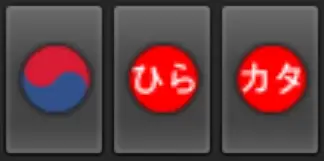
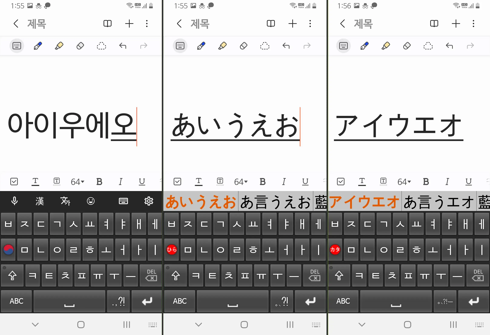
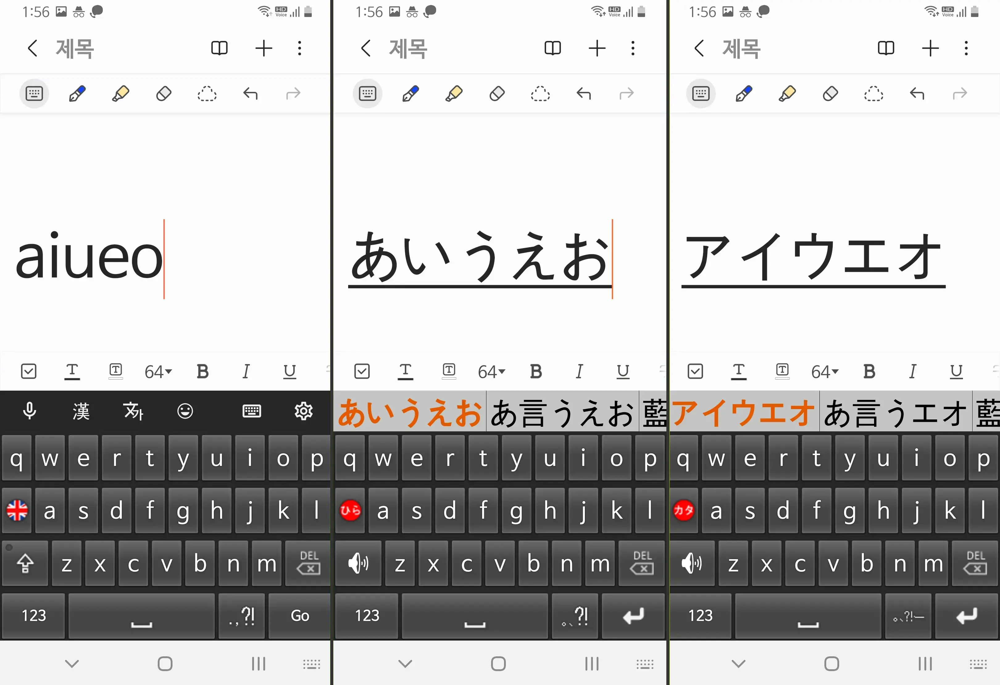

키보드를 설치했다면 이제 일본어를 입력해볼 차례입니다.
STEP 1

언어 입력 모드 버튼을 터치하면 입력 언어가 변경됩니다.
STEP 2

현재 한글/히라가나/카타카나 입력 중인지 표시됩니다.
STEP 3

한글 발음은 기본적으로 자연스럽게 발음되는 대로 입력하면
히라가나/카타카나로 변환되어서 입력되고
한자 변환도 가능합니다.
한자 변환도 가능합니다.
주의: を, ぢ는 각각 워→を, 디→ぢ로 조금 특수합니다.
STEP 4

일반적인 키보드처럼 로마자를 입력해도
히라가나/카타카나로 변환되어서 입력되고
한자 변환도 가능합니다.
한자 변환도 가능합니다.
예시 변환표
| 아→あ | 이→い | 우→う | 에→え | 오→お |
| 카→か | 키→き | 쿠→く | 케→け | 코→こ |
| 사→さ | 시→し | 스→す | 세→せ | 소→そ |
| 타→た | 치→ち | 츠→つ | 테→て | 토→と |
| 나→な | 니→に | 누→ぬ | 네→ね | 노→の |
| 하→は | 히→ひ | 후→ふ | 헤→へ | 호→ほ |
| 마→ま | 미→み | 무→む | 메→め | 모→も |
| 야→や | 유→ゆ | 요→よ | ||
| 라→ら | 리→り | 루→る | 레→れ | 로→ろ |
| 와→わ | 워→を | 응→ん |
특수기호(입력 모드별)
| 한글 | 히라 | 카타 |
| .,?! | 。、?! | 。、?!ー |
일본어에서는 ., , 대신 。, 、를 쓸 수 있어. 카타카나에서는 장음 ー도 입력 가능(또는 한글발음 ㅡ 입력).